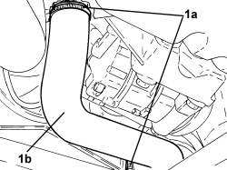
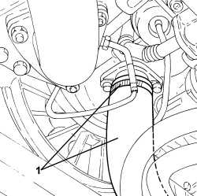
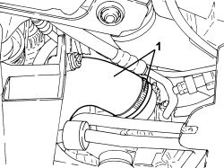

1048B14 AIR DELIVERY HOSE BETWEEN TURBOCHARGER AND HEAT EXCHANGER - REPLACE
- Path
- Procedures > 10 ENGINE > 1048 ENGINE AIR SUPPLY CIRCUIT > 1048B PRESSURE AIR CIRCUIT > 1048B14 AIR DELIVERY HOSE BETWEEN TURBOCHARGER AND HEAT EXCHANGER - REPLACE
- Kind
- repair procedure (removal / refitting; the operation number is the code)
- Applies to
- engines: 1.9 JTD 8V, 1.9 JTD 16V, 2.4 JTD 20V; all production periods
- Interactive page
- https://sloeber94.github.io/elrnDB/#/939010522
Applies to: engines: 1.9 JTD 8V, 1.9 JTD 16V; all production periods
 Removing
Removing
 Refitting
Refitting
Applies to: engines: 2.4 JTD 20V; all production periods
Removing
Refitting- Position the vehicle on a lift.
Op. 7055B54 UNDER ENGINE PROTECTION/GUARD - R.R.
1. Loosen the collar and disconnect the air delivery sleeve between the turbocharger and the heat exchanger, turbocharger side.

Applies to: engines: 2.4 JTD 20V; all production periods
1. Loosen the band and disconnect the air supply hose between the turbocharger and the heat exchanger, heat exchanger side then remove it.

Applies to: engines: 2.4 JTD 20V; all production periods
Refitting
Removing- Place the hose between the turbocharger and the heat exchanger back in its housing connect it to the heat exchanger and tighten the band.
- Connect the air supply hose between the turbocharger and the heat exchanger, turbocharger side, and tighten the band.
Op. 7055B54 UNDER ENGINE PROTECTION/GUARD - R.R.
- Remove the vehicle from the lift.
Topics linked from this page (1)
Topics that link to this page (7)
- 1020A20 CRANKCASE OIL SUMP - R.R CLEAN SURFACES FOR SEALANT APPLICATION
- 1020D14 FRONT CRANKSHAFT OIL SEAL COVER - R.R AND REPLACE SEALS FOR VERSIONS WITH OIL PUMP ON CRANKSHAFT, TIMING SIDE
- 1060G90 SYSTEM CABLE LOOM - R.R.
- 1084B26 ENGINE OIL INTAKE DUCT - R.R
- 1084B42 ENGINE OIL RETURN PIPE FROM TURBO - R + R
- 5040A20 AIR CONDITIONING COMPRESSOR - R+R - INCLUDES FLUID LEVEL CHECK AND TOP UP IF NECESSARY
- 5040A26 AIR CONDITIONING COMPRESSOR SUPPORT - R.R.